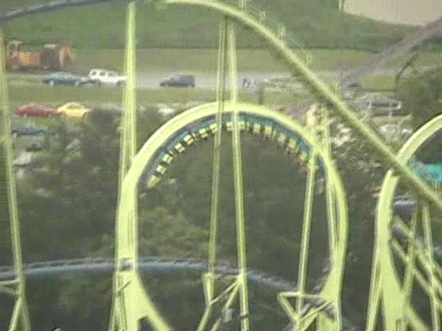

| |
Teststrecke Review

We're here at Dorney Park. Now for todays review, we're going to have to do a little bit of time traveling to the year of 2008. This was my last visit to Dorney Park. We need to do this because today's ride we'll be reviewing for you is Laser. A couple of months after my visit to Dorney Park, Laser left the park for good. =( That sucks because Laser kicked ass. But there is some good news. Laser is still living on in the German Fair Circuit, hence the lack of a tombstone in this review. So it's not too late to get on Laser!!! So anyways, after our time travel, we get in the trains and pull down the lap bars. And, we're off!! We then climb up the lifthill. When we look to our right, we then see the two loops and get excited as we get to go upsidedown without OTSRs today. Once we crest the top of the lifthill, we then go through a small turn before falling into the twisted drop. The drop is fun as we are leaning to the right, but we're still gaining a lot of speed for a ride of this size (It looks a lot bigger onride than it does offride). After the drop, we roar straight up into Loop #1. This loop is pretty damn powerful, pulling a lot of Gs and pinning us into our seats. Then we get to do it again in Loop #2. It just presses us with so many Gs. And it manages to bring a smile to our face. After roaring through the loops, we roar straight into a banked turn that gives us some good forces before heading back to thread the second loop. Ok, that's pretty cool. We then head back into a spiral helix back down which gives us quite a lot of speed. After that, we roar through some straight track that goes right inbetween the two loops. While it doesn't mean anything, it's just there to look cool. We then turn into a downward helix down by the drop. This provides us with some more awesome forces. We're shredding through the helix, and right after that, the brakes come. Dude, Laser kicked ass!!!! It was an awesome ride and was one of the better attractions in the park. While it's sad that it's not in Dorney Park anymore, Laser still does live on in the German Traveling Fair Circuit. So be sure to ride it over there.
8/10
Opened at Playcenter São Paulo in 1982
Relocated to Dorney Park in 1986
Relocated to the German Fair Circuit in 2009
Built by: Schwarzkopf
Last Ridden: August 15, 2008
I have ridden this exact same ride at the following parks.
Lagoon
Laser Photos


Home
|